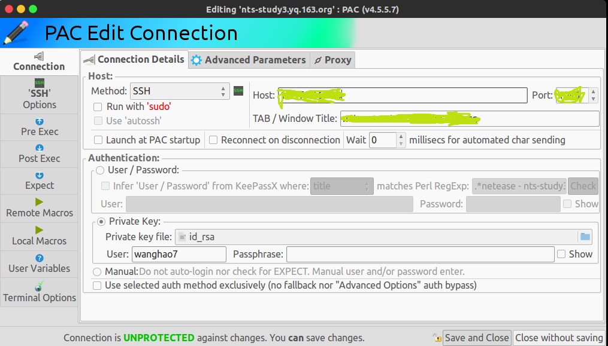
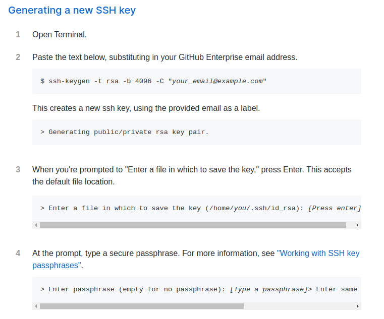

ssh认证原理
通过ssh从客户端登入服务端需要身份认证，ssh主要提供了密码认证和公钥认证两种方式。
下图是PAC的ssh连接管理界面，可以看Authentication一栏下的User/Password和Private Key，前者就是密码认证，后者其实就是公钥认证，只不过需要告诉PAC在哪里可以找到私钥。

密码认证
密码认证需要ssh client携带用户名和密码传递给ssh server，server端需要配置PasswordAuthentication为yes，否则不允许通过密码认证登录服务器。
生产环境下建议关闭密码认证：
- 虽然用户名和密码都被
session key加密后再传输给server端，但是依然有被暴力破解的风险； - 如果集群中所有机器都使用相同的密码，那么一台机器被破解整个集群将被全部破解；
- 如果不同机器使用不同的密码，那么给维护带来困难，客户端需要记住不同机器的密码，这也势必导致设置的密码十分简单，增大了被破解的风险。
登录命令：
|
|
关于session key :
Session keys are the “shared keys” described above and are randomly generated by both the client and the server during establishment of a connection. Both the client and host use the same session key to encrypt and decrypt data although a different key is used for the send and receive channels. Session keys are generated after host authentication is successfully performed but before user authentication so that usernames and passwords can be sent encrypted. These keys may be replaced at regular intervals (e.g., every one to two hours) during the session and are destroyed at its conclusion.
公钥认证
相比于密码认证需要用户名和密码，公钥认证是通过公私密钥对来认证身份的。
现在你想在本地登录目标机器，首先需要在本地生成公私秘钥对（下图是GitHub上关于生成秘钥对的教程）

可以看到第4步需要输入passphrase，这个passphrase是私钥的密码，也可以不设置，但是最好设置，因为一旦私钥泄露，或者别人使用你的私人电脑，别人就能登录使用你的私钥登录远程服务器了。
本地生成公私秘钥对后，需要把公钥添加到目标服务器对应用户的.ssh目录下的authorized_keys文件中，然后在ssh登录过程中，客户端携带被passphrase解密过的私钥以及用户名向目标服务器发起认证请求，目标服务器的ssh daemon进程检查authorized_keys中的Public Key尝试与私钥匹配，如果任一匹配成功则认证通过，如果全部匹配失败则认证不通过。
公钥认证比密码认证更加安全，只有当passphrase和私钥同时泄露时才会被盗用登录，而且二者同时泄露的可能性是很低的；另外，集群中的不同服务器可以使用相同的公私密钥对，所以只需设置一个passphrase即可，你尽可以设置一个强度高的passphrase。公钥认证的缺点是每次登录的时候都需要输入passphrase，比较麻烦，于是就有了下面的ssh agent。
使用ssh agent的公钥认证
“懒是人类社会发展的第一生产力”，此言不虚。为了避免每次登录的时候输入passphrase，ssh agent应运而生。agent是一个独立的进程，可以通过ssh-add命令将私钥交给agent保管，同时将passphrase告诉agent，那么agent就会把解密后的私钥放到内存里，下次登录时ssh client会向agent索要私钥，然后带着私钥向目标服务器发送登录请求，这样就省去了输入passphrase的麻烦。
使用ssh agent forwarding的公钥认证
如果你想从本地PC登录到服务器A，利用上面的公钥认证就能解决。但如果你还想从服务器A登录到服务器B，你需要在A生成公私密钥对，把公钥添加到B的authorized_keys文件中，然后在服务器A上ssh-add将私钥交给ssh agent保管，这样太麻烦了，有没有简单点的方式？
于是就有了ssh agent forwarding
首先通过本地PC登录到服务器A，接着在服务器A ssh登录服务器B，正常流程是A的ssh client向A的agent索要私钥，但是A并没有本地PC的私钥，于是A的sshd进程将请求转发给本地PC的agent，本地PC的agent将私钥作为响应传递给A，接下来A就拿着本地PC的私钥向服务器B发送ssh登录请求，B检查其authorized_keys中的公钥看是否能够与私钥匹配。这样就实现了在服务器A免密登录服务器B。
forwarding可以通过设置ForwardAgent为yes来开启，默认关闭。
参考：
https://blog.csdn.net/mr_raptor/article/details/51779339